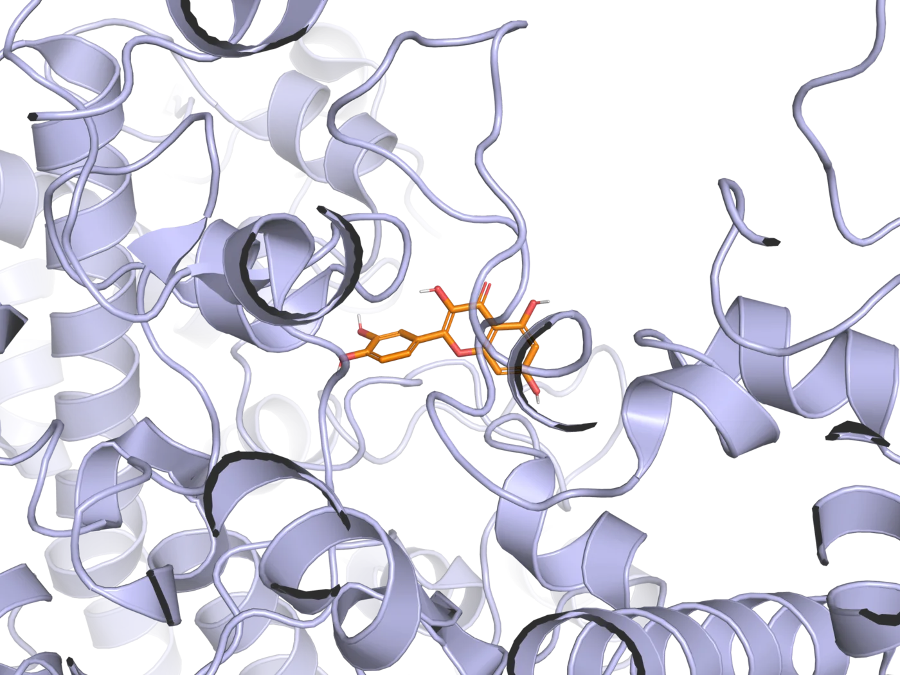

Selección
Quercetina, timoquinona y 6-shogaol como metabolitos de origen vegetal.
Una exploración computacional de compuestos naturales y sus posibles interacciones con dianas asociadas al adenocarcinoma mamario.

Mueve el cursor sobre la estructura Quercetina · COX-2Se evaluó el potencial de quercetina, timoquinona y 6-shogaol para interactuar con proteínas asociadas a proliferación, inflamación, angiogénesis, apoptosis y control del ciclo celular.
Entre las interacciones evaluadas, la quercetina presentó la afinidad de unión más favorable frente a COX-2. Esta visualización muestra la pose de docking correspondiente.
Un flujo computacional estructurado para comparar afinidades de unión. Los resultados se interpretan como evidencia preliminar y requieren validación experimental.
Quercetina, timoquinona y 6-shogaol como metabolitos de origen vegetal.
Proteínas HER2, ERα, VEGFR2, COX-2, Caspasa-3 y p53.
Simulaciones con AutoDock Vina y comparación de energías de unión.
El docking molecular predice posibles interacciones; no demuestra eficacia terapéutica ni sustituye estudios biológicos, farmacocinéticos o clínicos.
Proyecto de investigación computacional en oncología y acoplamiento molecular.